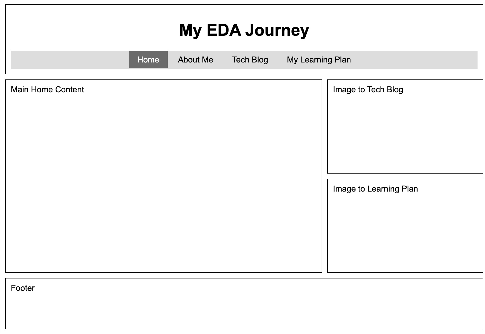
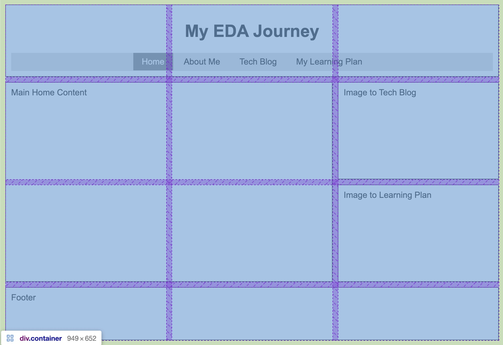
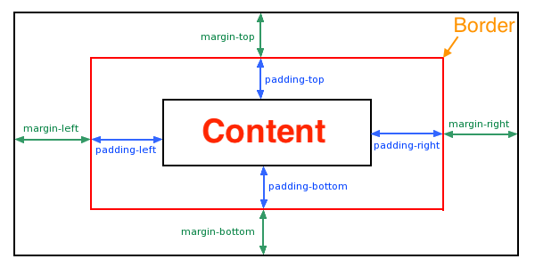
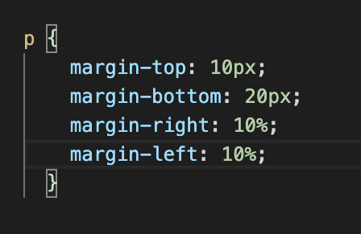
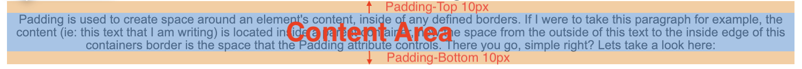
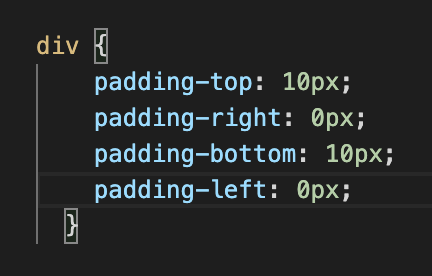
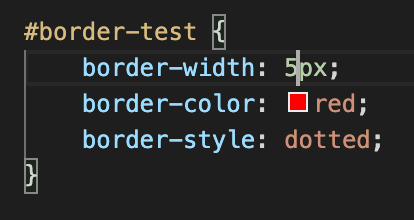

What is the difference between Margin, Border, Padding?
Welcome to my first Tech blog! In this blog I will try to explain the differences between Margins, Borders, and Padding. Hopefully by the end of this lesson you will have a good understanding of how these concepts work and how to best implement them in your future Web-development projects.
Before we get into the definitions of each concept, let’s first ask ourselves:
“What are webpages made of?”
Well, from a conceptual point of view, a webpage is basically a grid of ‘boxes’ or ‘containers’ neatly organised in a way that users can easily view content. Did you get all of that? :)
To better understand, here is a visual outline of my Home page, you can clearly see that in its raw form it is just a group of containers with borders and spaces in between. Now the space that seperates boxes/containers and it's contents inside is what we will be looking at. So let's get into it!
 In more detail we will see how we can control the gaps in-between each container (Margins), the space around the contents inside (Padding), and the space around the edges of the containers (Borders). Simple as that! The left picture above displays the containers and the picture to the right shows the shaded areas which highlight the grids Margin and Padding. Below is probably the most important image of this blog, it shows the different spaces for each topic that we will talk about. Get familiar with it! Print it out! and let it be your visual refference for understand Margins, Padding, and Borders.
What is a Margin?
As defined by w3schools, margins are used to create space around elements outside of any defined borders. We can set margins of a container by using the margin attributes that are available with Cascading Style Sheets (CSS). For more information about CSS click on this link. The key properties for specifying the margin for each side of an element are:
margin-topmargin-rightmargin-bottommargin-left
The values of these margin properties can be defined by length (in px, pt, cm), % of the width of the containing element, or by 'auto' where the browser calculates the margin for you. By adjusting the margins of a container what you are affectively doing is increasing or decreasing the outside space of the container as shown in the following image:
Here is an example of code I have used to set my margins for paragraphs, notice how I have defined the lengths by both px and %?. Defining the length by px creates a fixed length, and defining the length by % will create a dynamic lenth that will change in response to the container size.
What is Padding?
Padding is used to create space around an element's content, inside of any defined borders. If I were to take this paragraph for example, the content (ie: this text that I am writing) is located inside a parent container, now the space from the outside of this text to the inside edge of this containers border is the space that the Padding attribute controls. There you go, simple right? Lets take a look here:
If you look closely, you can see the text content is shaded blue, and above/below the content you can see the orange space right? Well that is the padding space. In this case we have set the padding for the top and bottom to 10px and the left and right to 0px. Defining the CSS padding properties is very much the same as defining our margins, here are the properties we use:
padding-toppadding-rightpadding-bottompadding-left
And here is the code that I have used to define the orange padding spaces in the example above:
Are you starting to get the picture?
What about Borders?
The last piece of the puzzle for this tech tutorial is the Border property! Very simply, this property allows you to specify the style, width and color of an elements's border. Nothing flashy, that is it..... Here are the main properties that you would use to define your border:
border-widthborder-colorborder-styleborder-radius
For the purposes of this blog, our focus is primarily on the border-width attribute. This sets the size or thickness of the border and therefore the final area of space that is between the containers Margin and Padding settings. Below is the code I have used to define this red dotted border.
Now can you see the differences between each of the 3 key spacial concepts? Great! Let's re-cap and use our original image from the begining to see the 3 different spacial areas of a container and how they are all connected.
- Starting with the Margin, this area highlighted in green above defines the space around the outside of a container and it's Border.
- Next is the border-width, this highlighted in red defines the space between the Margin and Padding settings.
- and Finally, the Padding area is the space that is defined between the Content and the containers Border.
I hope this has been a useful tutorial for you and wish you well on your journey to becomimg a Web-Developing Guru! Thank you for reading my tech-blog. Nga Mihi, Lewis.